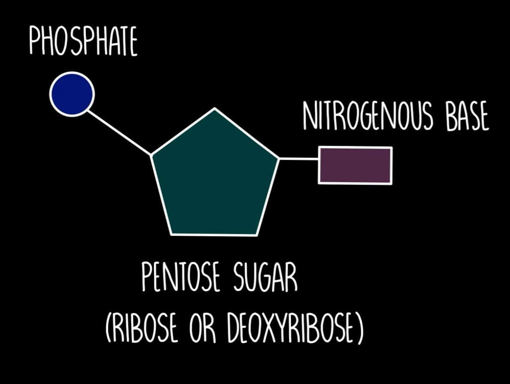
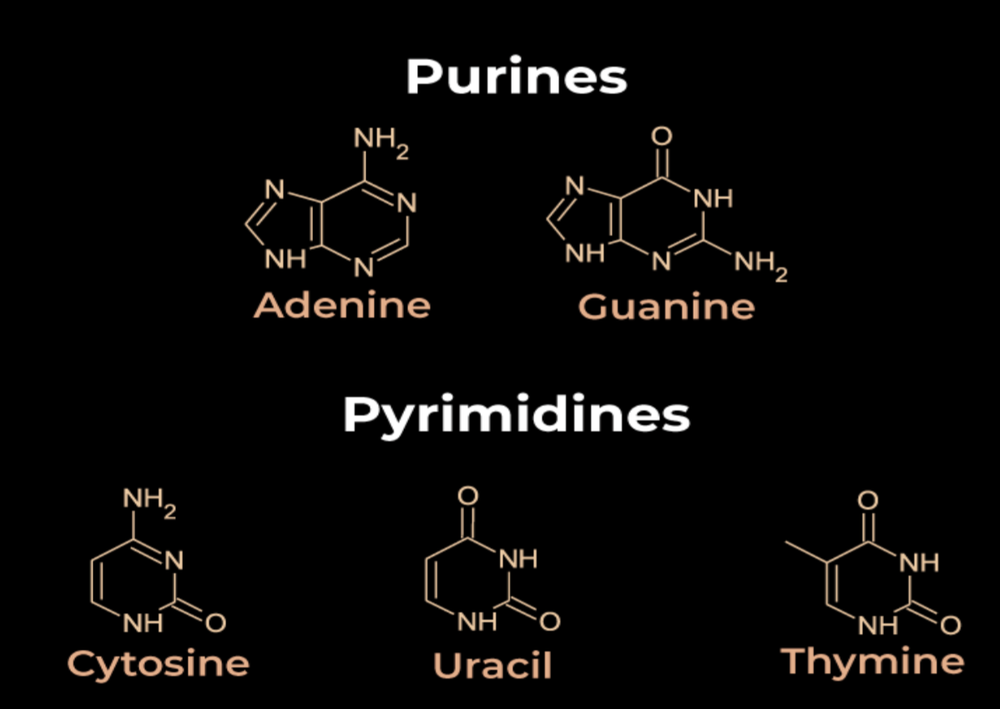
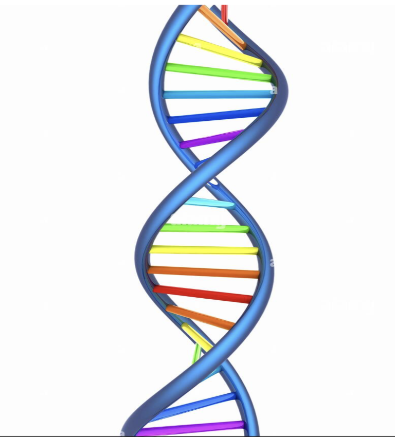
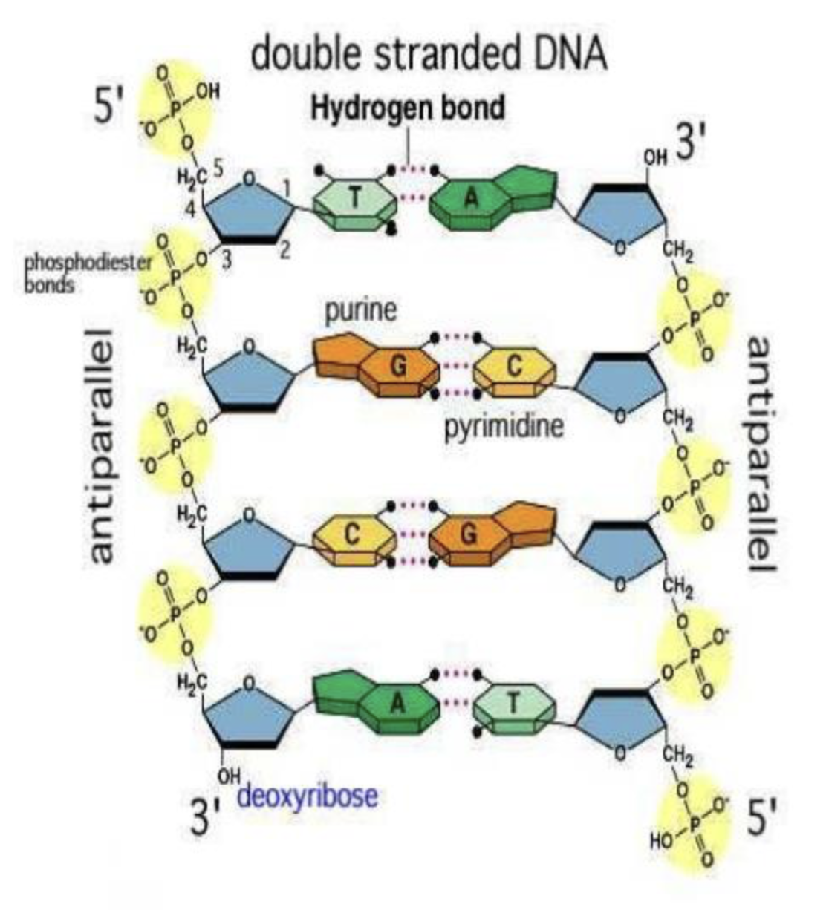
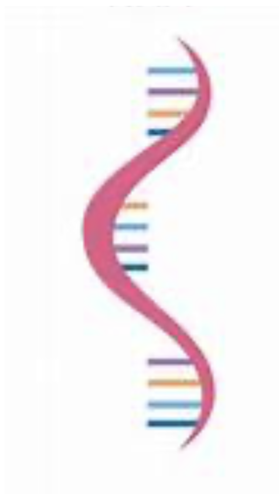

Introduction
- DNA (Deoxyribonucleic Acid) and RNA (Ribonucleic Acid) are nucleic acids — molecules that store and transfer genetic information in living organisms.
- They are polymers made of smaller units called nucleotides.
Structure of nucleotides

Nucleotides are the building blocks of DNA and RNA.
Each nucleotide has three parts:
- Phosphate group
- Sugar (Deoxyribose in DNA, Ribose in RNA)
- Nitrogenous base (Adenine, Thymine, Cytosine, Guanine, or Uracil)
In DNA, nucleotides link together by phosphodiester bonds to form long chains.
The sequence of bases (A, T, C, G) in nucleotides stores genetic information.
In RNA, Uracil (U) replaces Thymine (T).
Nitrogenous Bases:
Nitrogenous bases in DNA and RNA are divided into two groups:
Purines
- Larger structure — two fused rings (a 6-membered and a 5-membered ring).
- Bases:
- Found in both DNA and RNA.
- Tip: Pure As Gold → Purines = Adenine + Guanine
Pyrimidines
- Smaller structure — single 6-membered ring.
- Bases:
- Cytosine (C) (DNA and RNA)
- Thymine (T) (only in DNA)
- Uracil (U) (only in RNA)
- Tip: CUT the Py → Cytosine, Uracil, Thymine = Pyrimidines

Structure of DNA
Shape:
- Double helix (like a twisted ladder)

Base Pairing Rules (Chargaff’s Rule):
- A pairs with T (2 hydrogen bonds)
- G pairs with C (3 hydrogen bonds)
5' End and 3' End:
- 5' end: End of the DNA strand with a free phosphate group attached to the 5th carbon of the sugar.
- 3' end: End of the DNA strand with a free hydroxyl group (-OH) attached to the 3rd carbon of the sugar.
- During DNA replication and transcription, new nucleotides are always added to the 3' end!
Strands:
- DNA strands are antiparallel:
- One strand runs 5' → 3', the other runs 3' → 5'.

Structure of RNA
Shape:
- Usually single-stranded (can fold into complex shapes).

Components:
- Sugar: Ribose (one more oxygen atom than deoxyribose).
- Phosphate Group.
- Nitrogenous Bases:
- Adenine (A)
- Uracil (U) (instead of Thymine)
- Cytosine (C)
- Guanine (G)
Base Pairing:
- A pairs with U
- G pairs with C
Key Differences Between DNA and RNA
| Feature |
DNA |
RNA |
| Sugar |
Deoxyribose |
Ribose |
| Bases |
A, T, C, G |
A, U, C, G |
| Strands |
Double-stranded |
Single-stranded (mostly) |
| Location |
Mostly in nucleus |
Nucleus and cytoplasm |
| Stability |
More stable |
Less stable |
| Main Role |
Long-term genetic storage |
Protein synthesis and gene regulation |
Written by Kasiban Parthipan